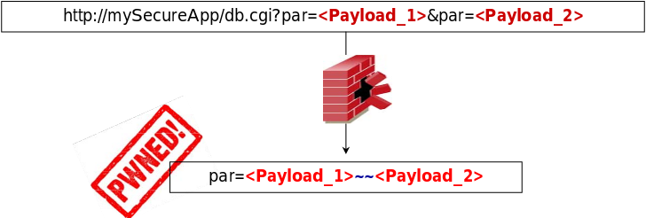

HTTP Parameter Polution can sometimes be used for a WAFW bypass
Some loose WAFs may analyze and validate a single parameter occurrence only (first or last one)
Whenever the devel environment concatenates multiple occurrences (e.g. ASP, ASP.NET, AXIS IP Cameras, DBMan, ...), an aggressor can split the malicious payload.

Another example
Concatenation Bypasses (WAF or otherwise)
While the following query is properly detected
/index.aspx?page=select 1,2,3 from table where id=1
Using HPP, it is possible to bypass the filter
/index.aspx?page=select 1&page=2,3 from table where id=1
This will only work on webservers/technologies where the duplicate page parameter is concatenated with a comma or other